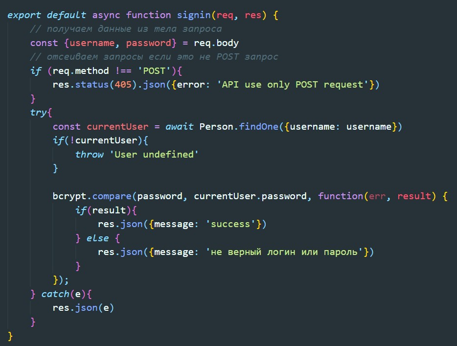
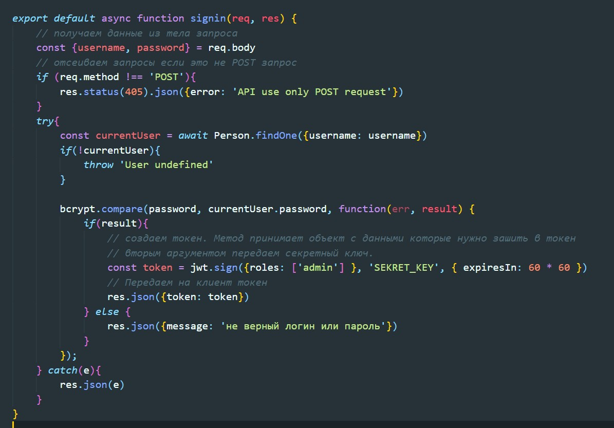

ссылка на репозиторий
Предполагается что у нас есть атлас mongoDb, и развернут NextJS проект
Вот так выглядит схема коллекции
Тут как обычно в pages создаем папку api внутри нее помещаем файд auth.js. Путь до брекпоинта будет http://localhost:3000/api/auth
Создаем новый брекпоинт signup.js
Минимальная настройка брекпоинта выглядит так:

С помощью bcrypt хешируем пароль
Создаем брекпоинт и называем его как login.js
Минимальная структура выглядит вот так:
Проверка наличия пользователя с таким login-ом и проверка пароля выглядит вот так:
с помошью метода compare мы проверяем соответствие паролей из БД и того какой ввел пользователь.
Если пользователь найден и пароли совпадают, мы должны вернуть JWT токен. Для этого воспользуемся библиотекой jsonwebtoken
{ expiresIn: 60 * 60 } - означает что токент будет жить 1 час
Полученный JWT токен мы можем прочитать на сайте jwt.io/
Каждый эндпоинт мы можем оборачивать в функцию, которая будет проверять JWT и если он валиден, то вернет брекпоинт. Иначе вернет ошибку. Вот как это выглядит:
А вот как будет выглядеть брекпоинт который будет обернут в эту функцию
Для работы с cookie устанавливаем пакет
npm install --save cookieТеперь переходим в файл брекпоинта авторизации и импортируем cookie
Теперь перепишем наш брекпоинт что бы он не возвращал в респонсе токен, а помещал токен а cookie
Теперь если в постмане отправить запрос по нашему брекпоинту, мы увидим вот такой результат
Теперь как нам проверять этот токен из cookie? Очень просто. В функции которая проверяет токен, мы просто меняем путь откуда будем этот токен вытаскивать:
После того как мы авторизовались и в cookie появился JWT мы получаем из cookie JWT и добавляем его в заголовке запроса к API